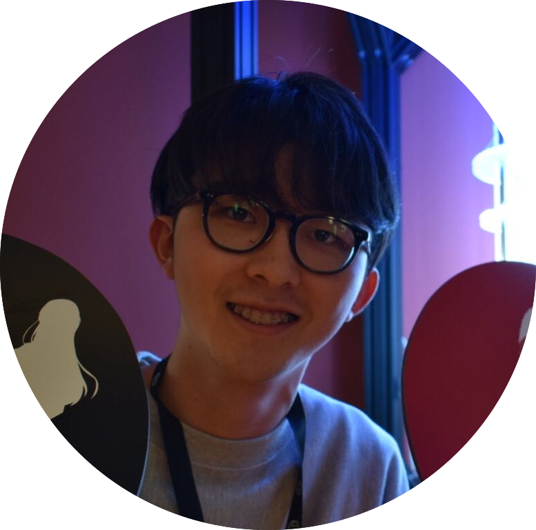
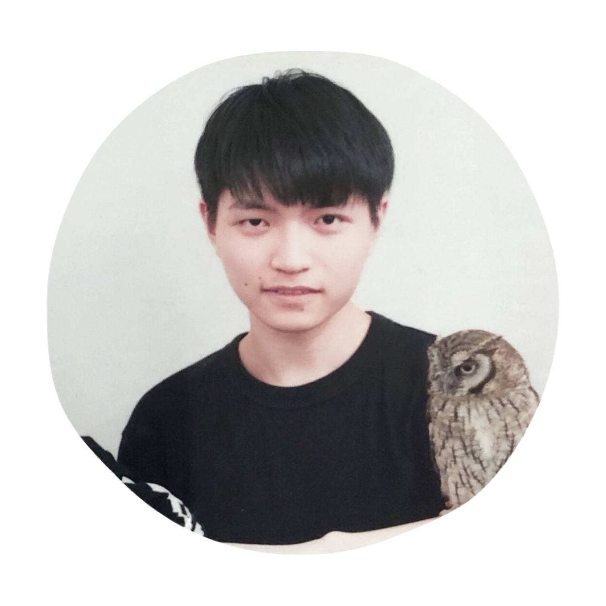

Members

Faculty 教官
 rdv
rdv
Rodney Van Meter 教授 個人サイト
慶應義塾大学環境情報学部 (Faculty of Environment and Information Studies at Keio University associate professor)
慶應義塾大学政策・メディア研究科委員 (Graduate school of Media and Governance at Keio University)
 satoh
satoh佐藤貴彦 政策・メディア研究科特任講師
 Michal
Michal
Michal Hajdušek 政策・メディア研究科特任講師 Google scholar
Doctoral Students 博士課程
 Sara (D2)
Sara (D2) Home Page
 whit3z(D2)
whit3z(D2) Master's Students 修士課程
 sam(M2)
sam(M2) GitHub
 cocori(M1)
cocori(M1)
 rum(M1)
rum(M1)
 sitong(M1)
sitong(M1)
 zigen(M1)
zigen(M1)
Undergraduate 学部生
 zomi(B4) dave(B4)
dave(B4)
 syu(B4)
 sakaue(B3)
sakaue(B3)
 shingy(B3)
shingy(B3)
 coscos(B2)
coscos(B2)
 nora(B2)
nora(B2)
 voy(B2)
voy(B2)
 kuku(B2)
kuku(B2)
 tam(B2)
tam(B2)
 dawidth(B1)
dawidth(B1)
 yuki(B1)
yuki(B1)
Old Boys, Old Girls (Alumni)
 murdock(-2021)
murdock(-2021) martian(-2019)
martian(-2019)
 parton(-2020)
parton(-2020) kurosagi
kurosagi
 kaaki(-2019)
kaaki(-2019) sayyor(-2019)
sayyor(-2019)
 william(-2019)
william(-2019) chanou(-2018)
chanou(-2018)
 takafumi(-2017)
takafumi(-2017) yume(-2017)
yume(-2017)
 bays(-2017)
bays(-2017) kaori(-2014)
fukuyama(-2013)
malt(-2013)
iomz(-2012)
kaori(-2014)
fukuyama(-2013)
malt(-2013)
iomz(-2012)